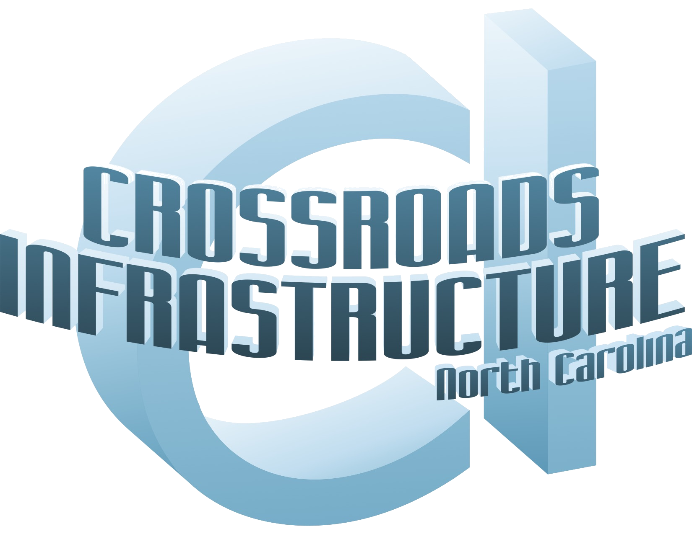

Concrete · Grading · Drainage · Retaining Walls
Precision installation of concrete curb & gutter lines, standard pedestrian sidewalks, commercial driveways, traffic islands, and regulatory ADA-compliant curb ramps.
Heavy site preparation management including structural earthwork grading, technical right-of-way clearing, grubbing sequences, and subgrade stabilization.
Installation of high-capacity masonry drainage catch basins, surface run-off structures, and underground storm drainage pipeline configurations.
Comprehensive layout installation and modular reconstruction parameters for Mechanically Stabilized Earth (MSE), Cast-in-Place, and Segmental Gravity Retaining Walls.
Raising, lowering, and shifting of active municipal manholes, water valve boxes, and other buried utility structures during roadway and site work.
Crossroads Infrastructure Inc. is an NCDOT Prequalified Subcontractor and a certified WBE/DBE HUB business, giving prime contractors and public agencies confidence in both our compliance and our craftsmanship.